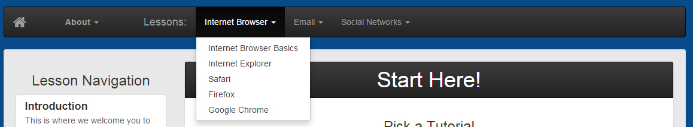
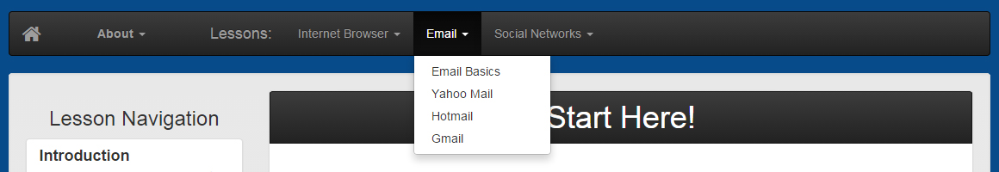
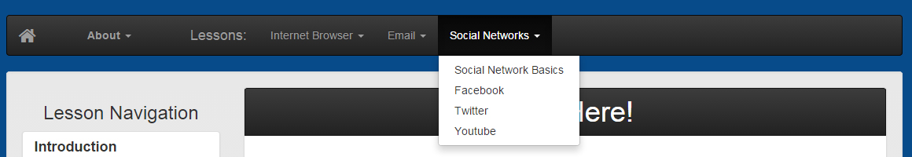

Lesson Navigation
Start Here!
Pick a Tutorial
It's time for you to decide what tutorial you would like to start with. There are many tutorials to choose from, but each serves a different purpose and starts at a different level. Below, we've provided some charts that should help you. When you find the lesson that sounds good to you, click on the blue lesson name. You can find the lesson name on the left side of the chart. Good luck!
Internet Browser Lessons
You can find Internet Browser Lessons by clicking on the "Internet Browser" tab in the top navigation bar, like this:
| Lesson | Description | Start Here If |
|---|---|---|
| Internet Browser Basics | This is the section of the website where you can learn how to use a web browser. This section will teach you what a web browser is and what its basic functions are. | You don't know what an internet browser is or you don't know how to browse the internet. |
| Internet Explorer | This is the section of the website that talks about Internet Explorer's unique functions and how to optimize Internet Explorer settings for security and viewing. | You don't know very much about Internet Explorer or you don't know how to use Internet Explorer security settings. |
| Safari | This is the section of the website that talks about Safari's unique functions and how to optimize Safari settings for security and viewing. | You don't know very much about Safari or you don't know how to use Safari security settings. |
| Firefox | This is the section of the website that talks about Firefox's unique functions and how to optimize Firefox settings for security and viewing. | You don't know very much about Firefox or you don't know how to use Firefox security settings. |
| Google Chrome | This is the section of the website that talks about Google Chrome's unique functions and how to optimize Google Chrome settings for security and viewing. | You don't know very much about Google Chrome or you don't know how to use Google Chrome security settings. |
Email Lessons
You can find Email Lessons by clicking on the "Email" tab in the top navigation, like this:
| Lesson | Description | Start Here If |
|---|---|---|
| Email Basics | This is the section of the website where you can learn basic information about what email is, and how it works. | You have never used email before or are unfamiliar with how email works. |
| Yahoo | This is the section of the website where you can learn about how to set up a Yahoo Mail account and use one. This section will also teach you how to optimize your Yahoo Mail account security settings. | You have never used Yahoo email before or would like to learn more about how to use your existing Yahoo Mail account. |
| Hotmail | This is the section of the website where you can learn about how to set up a Hotmail account and use one. This section will also teach you how to optimize your Hotmail account security settings. | You have never used Hotmail email before or would like to learn more about how to use your existing Hotmail account. |
| Gmail | This is the section of the website where you can learn about how to set up a Gmail account and use one. This section will also teach you how to optimize your Gmail account security settings. | You have never used Gmail before or would like to learn more about how to use your existing Gmail account. |
Social Network Lessons
You can find Social Network Lessons by clicking on the "Social Networks" tab in the top navigation, like this:
| Lesson | Description | Start Here If |
|---|---|---|
| Social Network Basics | This is the section of the website where you can learn about what a social network is, and how it functions. | You have never used a social network before or would like to learn more about the concept of social networks. |
| This is the section of the website where you can learn about what Facebook is and how to use one. You can also learn how to optimize your security settings in this section. | You have never used a Facebook account before, or you would like to learn more about how to optimize your Facebook account. | |
| This is the section of the website where you can learn about what Twitter is and how to use one. You can also learn how to optimize your security settings in this section. | You have never used a Twitter account before, or you would like to learn more about how to optimize your Twitter account. | |
| YouTube | This is the section of the website where you can learn about what YouTube is and how to use one. You can also learn how to optimize your security settings in this section. | You have never used a YouTube account before, or you would like to learn more about how to optimize your YouTube account. |
If you are still having trouble selecting a lesson, why not try starting from the beginning, with internet browsers? You could also try selecting a tutorial that sounds interesting to you.
To navigate back to the introduction, click "Previous Lesson" below.
Helpful Links:


The Simply Social brand is Simply Social Inc. 2014. Simply Social only owns the Simply Social logo, and all other images are copyrighted by their respective owners. The sources for these images, as well as the website icons, can be found in the about page. This website was made for a class project, and is not intended for any kind of commerce or commercial use. Simply Social is not affiliated in any way with any of the other websites mentioned or linked to in this website.